set.seed(123)
# True model parameters
n <- 1000
beta0 <- 2
beta1 <- 3
# Generate independent variable X
X <- rnorm(n, mean = 0, sd = 1)
# Generate true Y
epsilon <- rnorm(n, mean = 0, sd = 1)
Y <- beta0 + beta1 * X + epsilon
# Try different values of mean measurement error (delta)
delta_means <- seq(-5, 5, by = 0.5)
# Store results
results <- data.frame(
delta_mean = delta_means,
intercept_hat = NA,
slope_hat = NA,
se_slope = NA
)
for (i in seq_along(delta_means)) {
delta <- rnorm(n, mean = delta_means[i], sd = 0.5)
Y_mis <- Y + delta
model <- lm(Y_mis ~ X)
summary_model <- summary(model)
results$intercept_hat[i] <- coef(model)[1]
results$slope_hat[i] <- coef(model)[2]
results$se_slope[i] <- summary_model$coefficients[2, 2]
}Measurement Error
Errors-in-Variables
Errors-in-Variables in the dependent variable
random errors with varying mean (and fixed variance)
Suppose there is a mismeasurement in Y. So you observe YMIS rather than Y. Use R to simulate how the estimated coefficient on the constant term and X in a regression of YMIS on X, and its standard error depends on the mean of the error
so to illustrate the measurement error, if we plot Y on the x axis and the mismeasured Y (here the average error is +5) we see that the mismeasured Y is basically Y+5 (the red line is where Y=Y)
# Plot results
plot(Y, Y_mis, type = "p",
main = "Correctly measured Y vs mismeasured Y",
xlab = "Y", ylab = "Y_mis")
grid()
abline(a = 0, b = 1, col = "red", lty = 2, lwd = 2) 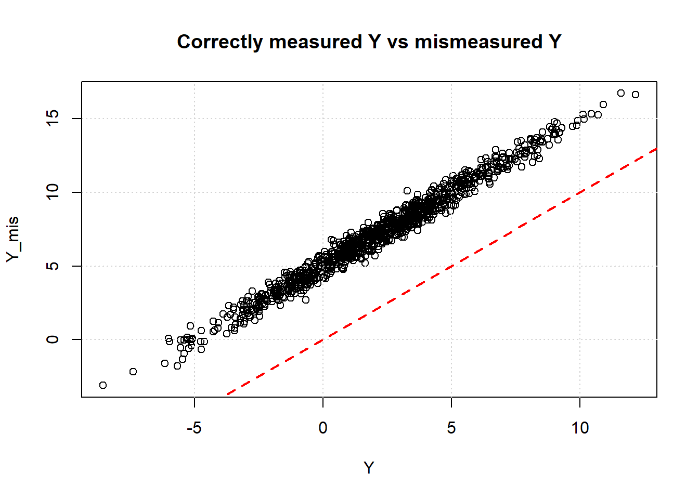
Conclusion 1: the estimated constant term will be biased: the estimated error term will be the true error term (beta0) + average of the measurement error in Y.
Why:
The true model is
\[ Y = \beta_0 + \beta_1 X + \epsilon \]
But we don’t have Y, instead we have YMIS so the regression we run is
\[ YMIS = \alpha_0 + \alpha_1 X + \eta \]
We also know
\[ YMIS = Y + \delta \]
where $$ is the measurement error
If we substitute this in the previous equation we get
\[ Y + \delta = \alpha_0 + \alpha_1 X + \eta \]
or
\[ Y = \alpha_0 - \delta + \alpha_1 X + \eta \]
The estimated intercept will be different: \(\beta_0=\alpha_0-\delta\), the estimated constant term of the YMIS regression \(alpha_0\)will be the sum of the true error term \(beta_0\)and the average measurement error\(delta\).
# Plot results
plot(results$delta_mean, results$intercept_hat, type = "b",
main = "Estimated Intercept vs Mean of Measurement Error",
xlab = "Mean of Measurement Error (delta)", ylab = "Estimated Intercept")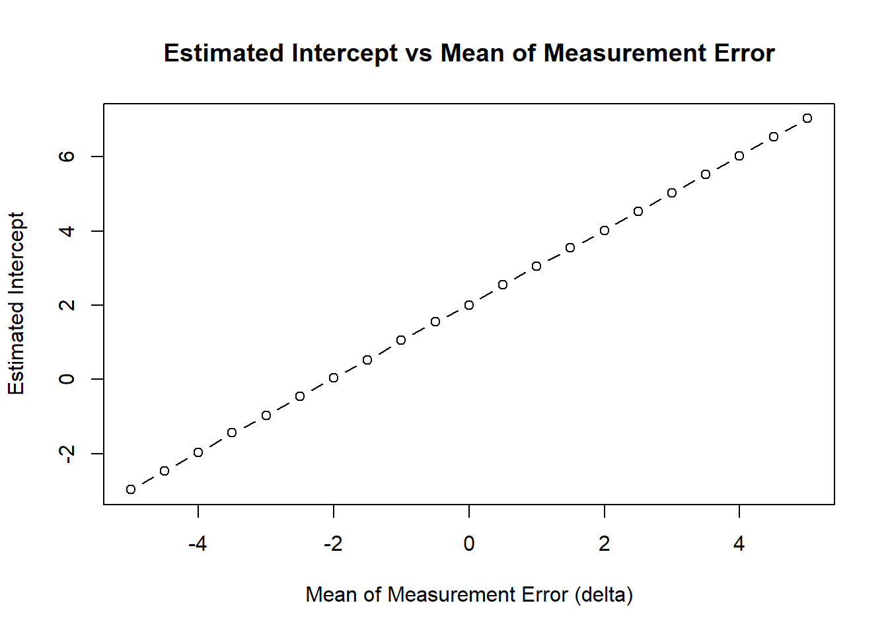
The slope estimate is not affected: if you regress the true Y on X or YMIS on X you get an estimate of about \(\beta_1\)=\(\alpha_1\)
plot(results$delta_mean, results$slope_hat, type = "b",
main = "Estimated Slope vs Mean of Measurement Error",
xlab = "Mean of Measurement Error (delta)", ylab = "Estimated Slope")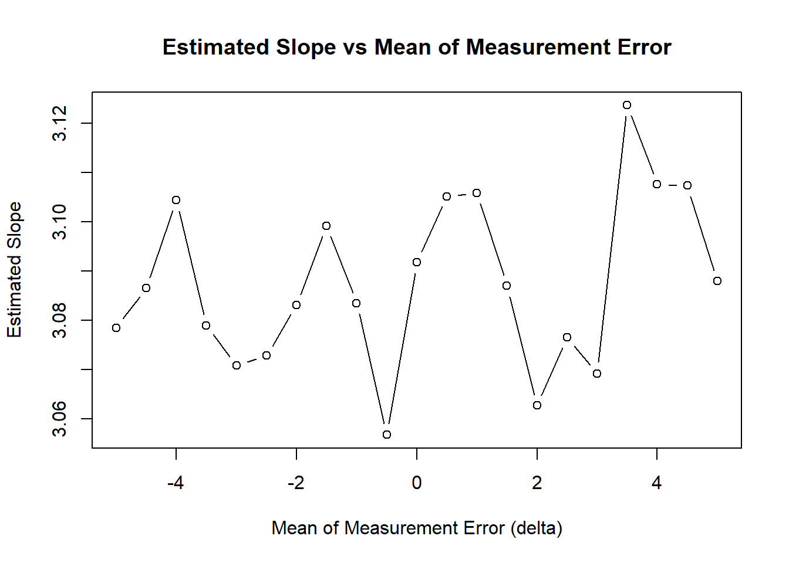
Similarly, it doesnt really affect the standard error of the slope
plot(results$delta_mean, results$se_slope, type = "b",
main = "SE of Slope vs Mean of Measurement Error",
xlab = "Mean of Measurement Error (delta)", ylab = "SE of Slope")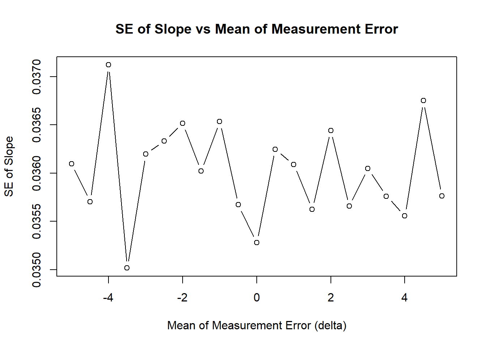
random errors with varying variance (and fixed mean)
Now let’s have an average measurement error in the dependent variable of zero, but look at what happens if the variance of the mismeasurement goes up
set.seed(123)
# True model parameters
n <- 1000
beta0 <- 2
beta1 <- 3
# Generate independent variable X
X <- rnorm(n, mean = 0, sd = 1)
# Generate true Y
epsilon <- rnorm(n, mean = 0, sd = 1)
Y <- beta0 + beta1 * X + epsilon
# Try different values of variance measurement error (delta)
delta_var <- seq(0.5, 5, by = 0.5)
# Store results
results <- data.frame(
delta_var = delta_var,
intercept_hat = NA,
slope_hat = NA,
se_slope = NA
)
for (i in seq_along(delta_var)) {
delta <- rnorm(n, mean = 0, sd = delta_var[i])
Y_mis <- Y + delta
model <- lm(Y_mis ~ X)
summary_model <- summary(model)
results$intercept_hat[i] <- coef(model)[1]
results$slope_hat[i] <- coef(model)[2]
results$se_slope[i] <- summary_model$coefficients[2, 2]
}To illustrate the measurement error: on average we are correct (so we follow the Y=Y line) but we are not always on the line, we sometimes get quite far away from it, but sometimes positive sometimes negative.
# Plot results
plot(Y, Y_mis, type = "p",
main = "Correctly measured Y vs mismeasured Y",
xlab = "Y", ylab = "Y_mis")
grid()
abline(a = 0, b = 1, col = "red", lty = 2, lwd = 2) 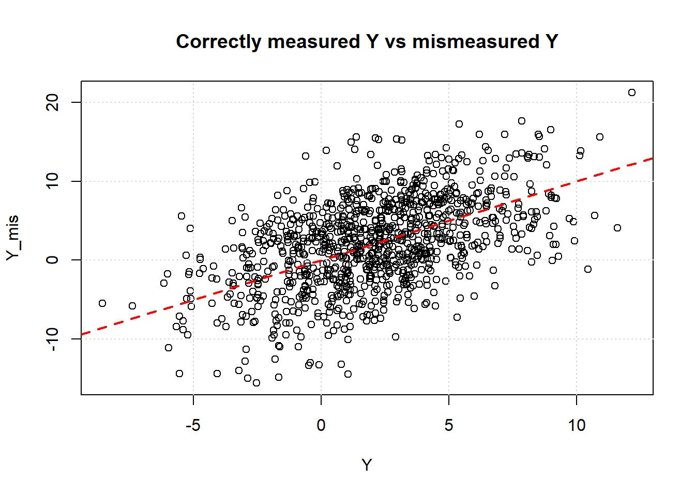
Increasing the variance of the measurement error means the noise to signal ratio is increasing. As a consequence, while on average we still get the right answer, the variance of the estimates will go up!
# Plot results
plot(results$delta_var, results$intercept_hat, type = "b",
main = "Estimated Intercept vs Variance of Measurement Error",
xlab = "Variance of Measurement Error (delta)", ylab = "Estimated Intercept")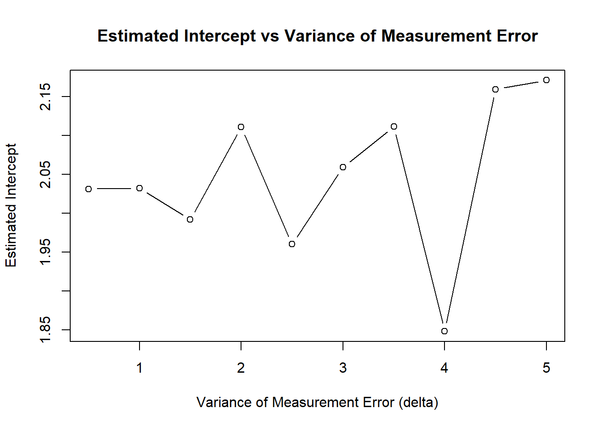
This was true for the estimate of the constant but also for the estimate of the variance
plot(results$delta_var, results$slope_hat, type = "b",
main = "Estimated Slope vs Variance of Measurement Error",
xlab = "Variance of Measurement Error (delta)", ylab = "Estimated Slope")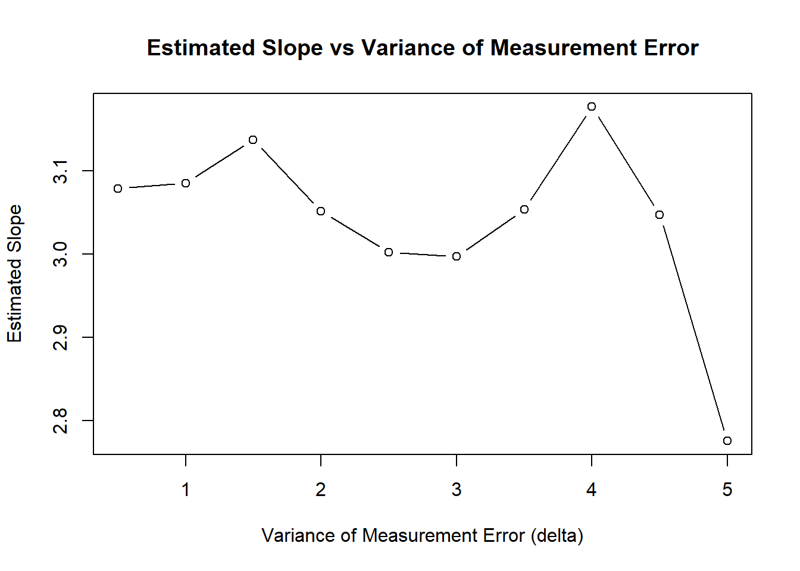
Similarly, the standard error of the slope gets higher and higher as we get less and less precise estimates.
plot(results$delta_var, results$se_slope, type = "b",
main = "SE of Slope vs Variance of Measurement Error",
xlab = "Variance of Measurement Error (delta)", ylab = "SE of Slope")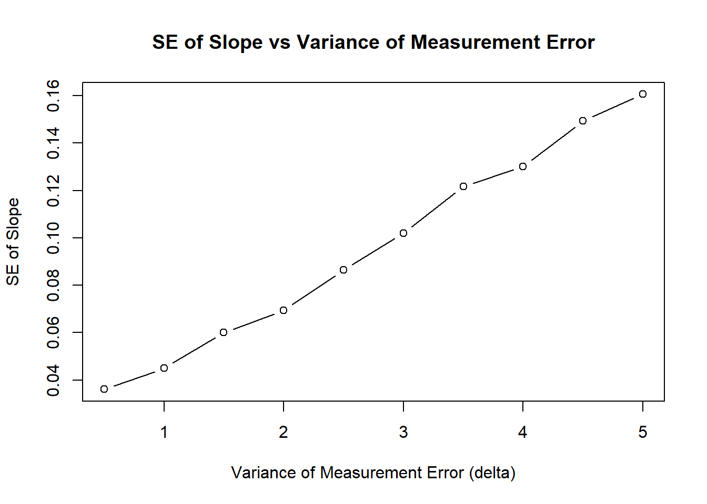
Errors-in-Variables in the dependent variable
Errors-in-Variables in the dependent variable
random errors with varying mean (and fixed variance)
Suppose there is a mis-measurement in X. So you observe XMIS rather than X. Use R to simulate how the estimated coefficient on the constant term and XMIS in a regression of YMIS on XMIS, and its standard error depends on the mean of the measurement error.
set.seed(123)
# True model parameters
n <- 1000
beta0 <- 2
beta1 <- 3
# Generate true X
X <- rnorm(n, mean = 0, sd = 1)
# Generate true Y from the model
epsilon <- rnorm(n, mean = 0, sd = 1)
Y <- beta0 + beta1 * X + epsilon
# Try different values for the mean of the measurement error in X
delta_means <- seq(-5, 5, by = 0.5)
# Store results
results <- data.frame(
delta_mean = delta_means,
intercept_hat = NA,
slope_hat = NA,
se_slope = NA
)
for (i in seq_along(delta_means)) {
delta <- rnorm(n, mean = delta_means[i], sd = 0.5)
X_mis <- X + delta
model <- lm(Y ~ X_mis)
summary_model <- summary(model)
results$intercept_hat[i] <- coef(model)[1]
results$slope_hat[i] <- coef(model)[2]
results$se_slope[i] <- summary_model$coefficients[2, 2]
}to show the measurement error in x - in this case the values of Xmis are always bigger than X, with the difference being constant
# Plot results
plot(X, X_mis, type = "p",
main = "Correctly measured X vs mismeasured X",
xlab = "X", ylab = "X_mis")
grid()
abline(a = 0, b = 1, col = "red", lty = 2, lwd = 2) 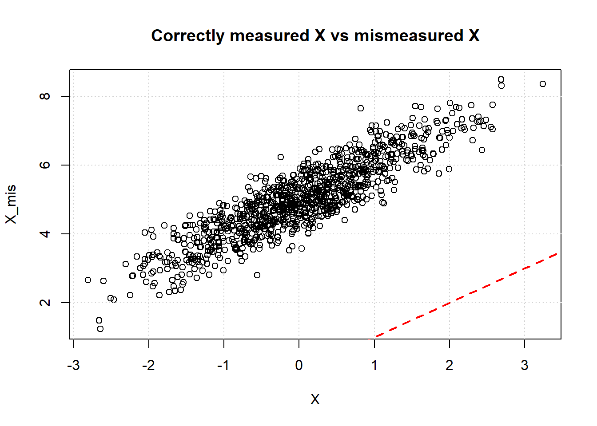
This affects the estimate of beta0
# Plot results
plot(results$delta_mean, results$intercept_hat, type = "b",
main = "Estimated Intercept vs Mean of Measurement Error in X",
xlab = "Mean of Measurement Error (delta)", ylab = "Estimated Intercept")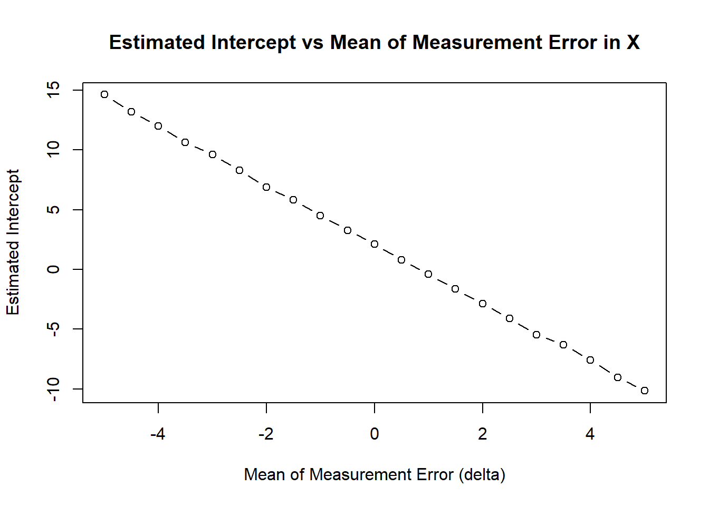
and also of the slope - there is an attenuation bias: since there is an error in X and this error is not correlated with Y, we will get a bias towards zero. In the extreme, if the error is huge, Xmiss will be mainly determined by the error which is uncorrelated with Y - so our estimated slope coefficient will be zero.
plot(results$delta_mean, results$slope_hat, type = "b",
main = "Estimated Slope vs Mean of Measurement Error in X",
xlab = "Mean of Measurement Error (delta)", ylab = "Estimated Slope")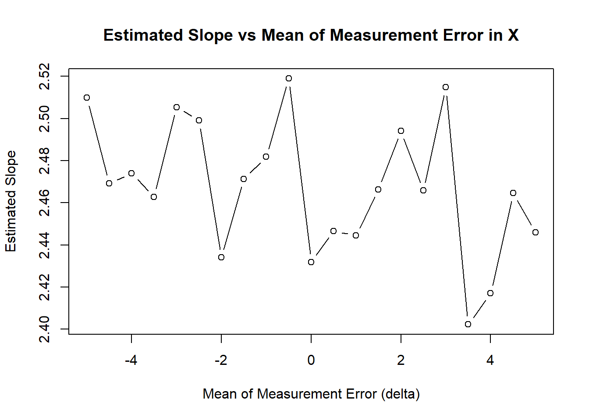
And we cant trust standard errors anymore either.
plot(results$delta_mean, results$se_slope, type = "b",
main = "SE of Slope vs Mean of Measurement Error in X",
xlab = "Mean of Measurement Error (delta)", ylab = "Standard Error of Slope")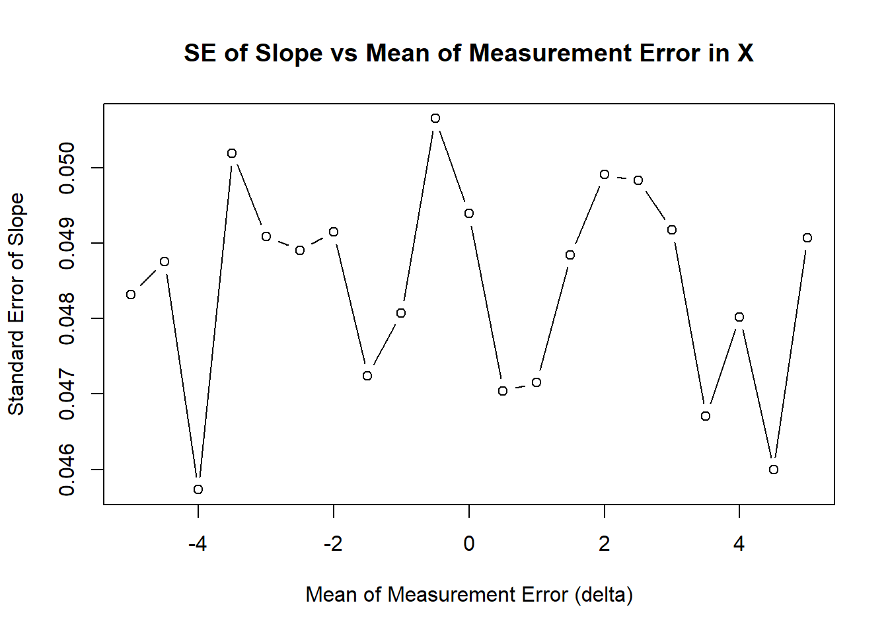
Increasing the variance of the error, will increase the problem as Xmis becomes less and a less a signal of the real X.
What if the measurement error in X is correlated with Y (which includes if its correlated with other X that are affecting Y): this correlation will increase (positive correlation) or decrease (negative correlation) the estimated effect.
Summarizing
We want to estimate the linear model:
\[ Y^* = \beta_0 + \beta_1 X + \varepsilon \]
But instead of observing Y*, we observe:
\[ Y = Y^* + u \]
That is, we will run the regression
\[ Y = \beta_0 + \beta_1 X + \varepsilon + u \]
Where:
- u is measurement error in Y
- \(\varepsilon\) is the true regression error
- E[\(\varepsilon\) ]= 0 and \(\varepsilon\) is uncorrelated with X
- But E[u ]might be different from 0, and u may be correlated with X.
We are interested in how this affects: - the slope estimate \(\hat\beta_1\) , - the intercept estimate \(\hat\beta_0\).
- Slope Estimate in OLS
When we run the correct regression, Y on X, the OLS estimator for the slope would be:
\[ \hat\beta_1 = \frac{\text{Cov}(X, Y)}{\text{Var}(X)} \]
Substitute Y = Y* + u = \(\beta_0 + \beta_1 X + \varepsilon + u\):
\[ \text{Cov}(X, Y) = \text{Cov}(X, \beta_0 + \beta_1 X + \varepsilon + u) \]
since Cov(X,\(\varepsilon\))=0 and Cov(X, $\beta_0$$)=0
\[ \text{Cov}(X, Y) = \text{Cov}(X, \beta_0 + \beta_1 X + \varepsilon + u) = \beta_1 \text{Var}(X) + \text{Cov}(X, u) \]
So:
\[ \hat\beta_1 = \frac{\beta_1 \text{Var}(X) + \text{Cov}(X, u)}{\text{Var}(X)} = \beta_1 + \frac{\text{Cov}(X, u)}{\text{Var}(X)} \]
Bias in Slope:
\[ \text{Bias}(\hat\beta_1) = \frac{\text{Cov}(X, u)}{\text{Var}(X)} \]
So:
If the covariance between the explanatory variable and the measurement error is positive
(\(\text{Cov}(X, u)\) > 0), then the slope is biased upward
If the covariance between the explanatory variable and the measurement error is negative
(\(\text{Cov}(X, u)\) < 0), then the slope is biased downward
If the covariance between the explanatory variable and the measurement error is zero
(\(\text{Cov}(X, u)\) = 0), then the slope is unbiased.
Step 2: Intercept Estimate in OLS
The OLS intercept is:
\[ \hat\beta_0 = \bar{Y} - \hat\beta_1 \bar{X} \]
Take expectations:
\[ \mathbb{E}[\hat\beta_0] = \mathbb{E}[\bar{Y}] - \mathbb{E}[\hat\beta_1] \cdot \bar{X} \]
we already computed above that
\[ \mathbb{E}[\hat\beta_1] = \beta_1 + \frac{\text{Cov}(X, u)}{\text{Var}(X)} \]
we also know that
\[ Y = Y^* + u \]
and hence that
\[ \mathbb{E}[\bar{Y}] = \mathbb{E}[\overline{Y^*}] + \mathbb{E}[\bar{u}] = \beta_0 + \beta_1 \bar{X} + \mathbb{E}[u] \]
since
\[ Y^* = \beta_0 + \beta_1 X + \varepsilon \]
taking averages and expectations of both sides, and E[\(\varepsilon\) ]= 0 and E[\(\beta_0\) ]= \(\beta_0\)
\[ \mathbb{E}[\overline{Y^*}] = \beta_0 + \beta_1 \bar{X} \]
so
\[ \mathbb{E}[\bar{Y}] = \mathbb{E}[\overline{Y^*}] + \mathbb{E}[\bar{u}] = \beta_0 + \beta_1 \bar{X} + \mathbb{E}[u] \]
Substituting
\[ \mathbb{E}[\hat\beta_0] = \beta_0 + \beta_1 \bar{X} + \mathbb{E}[u] - \left( \beta_1 + \frac{\text{Cov}(X, u)}{\text{Var}(X)} \right) \bar{X} \]
\[ = \beta_0 + \mathbb{E}[u] - \frac{\text{Cov}(X, u)}{\text{Var}(X)} \cdot \bar{X} \]
Bias in Intercept:
\[ \text{Bias}(\hat\beta_0) = \mathbb{E}[u] -\frac{\text{Cov}(X, u)}{\text{Var}(X)} \cdot \bar{X} \]
Interpretation
| Component | Effect |
|---|---|
| \(\text{Cov}(X, u)\) > 0 | Overstates slope, understates intercept |
| \(\text{Cov}(X, u)\) < 0 | Understates slope, overstates intercept |
| If \(\bar{X}\) = 0 | Intercept remains unbiased even if u is correlated with X |